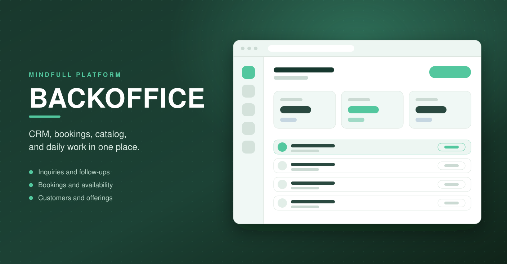
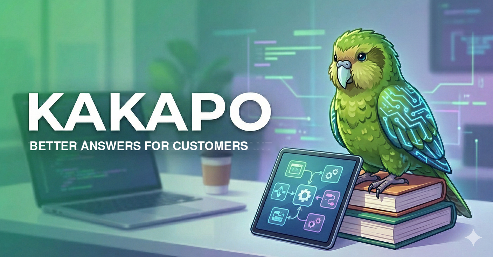
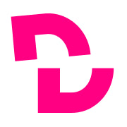
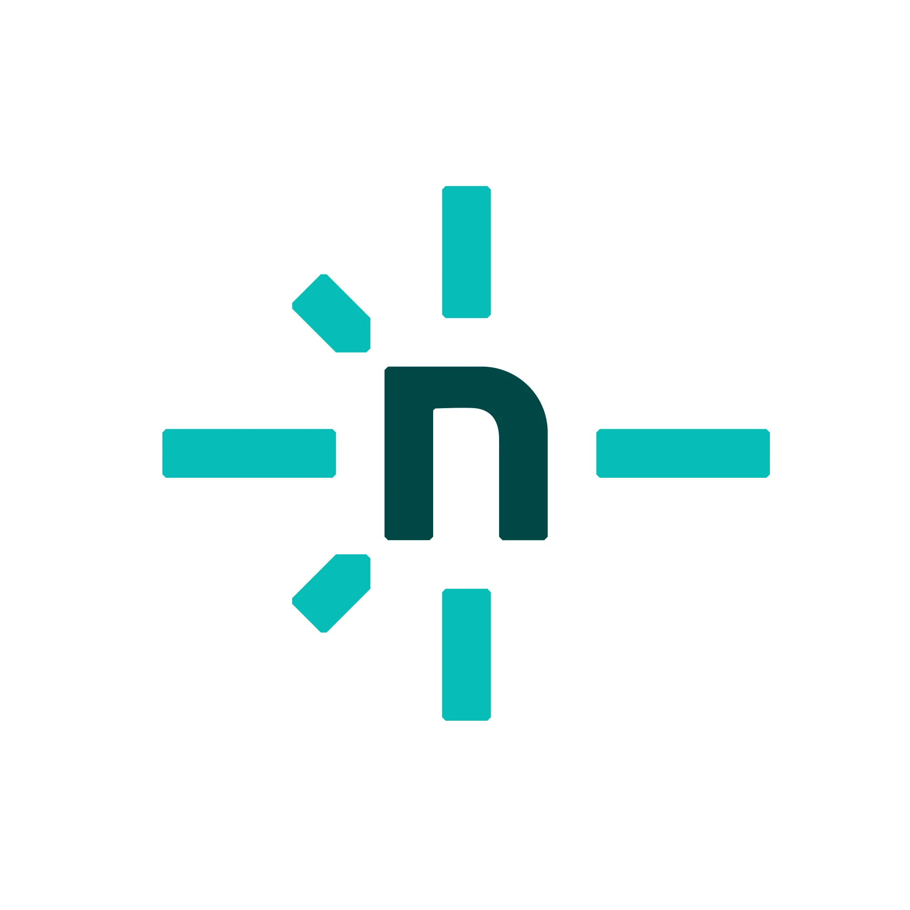
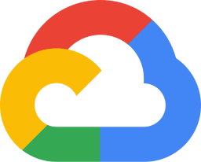
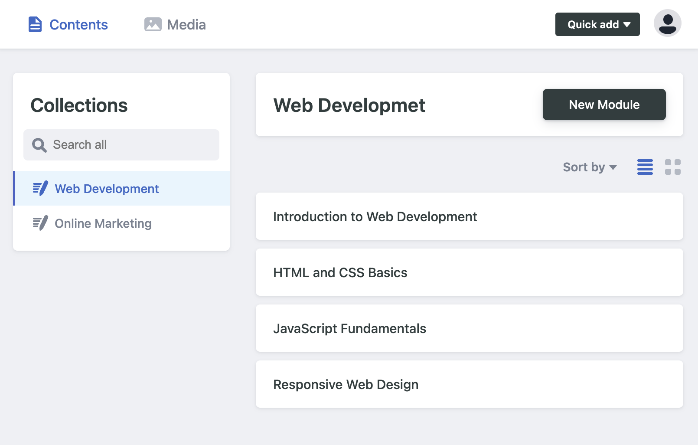

📫 Reach me at
www.chandu-sasidharan.de
I am a Senior Full Stack Developer who takes SaaS products from concept to
production. My work covers the whole system: React and Next.js frontends,
Node.js backends, PostgreSQL, and cloud infrastructure on AWS and
Hetzner, with the CI/CD pipelines and observability needed to keep it
running.
Recent work centres on multi-tenant platforms and AI-enabled products:
shared identity and authorization, Stripe subscriptions with metered
usage, retrieval-augmented generation (RAG) pipelines, and the data
ingestion, orchestration, and cost controls that make AI features
dependable in real workflows. I care about clean architecture, pragmatic
decisions, and software that solves an actual business problem.
## Selected Projects
Backoffice |
Next.js |
 Node.js |
Node.js |
 Express |
PostgreSQL |
Express |
PostgreSQL |
 OpenAI |
OpenAI |
 Stripe |
Stripe |
 Docker |
Caddy |
Docker |
Caddy |
 GitHub CI/CD
GitHub CI/CD
|
|
Backoffice is a multi-tenant SaaS product for owner-run
businesses. It brings CRM, catalog, bookings, calendars, and
customer communication into one workspace, with the business's
own mailbox connected and AI reply drafting grounded in the
workspace's own data. I designed and built the platform behind
it: a shared backend that owns identity, tenancy,
authorization, Stripe subscriptions, and metered AI usage,
serving several Next.js applications from one TypeScript
monorepo. Every service ships as a Docker image through GitHub
Actions to staging and production behind a Caddy edge.
|

|
Kakapo |
Next.js |
Node.js |
PostgreSQL |
OpenAI |
 Tailwind |
Docker
Tailwind |
Docker
|
|
Kakapo is a chatbot builder that lets a business train an AI
assistant on its own content and embed it anywhere. Bots answer
from tenant-owned knowledge through a retrieval-augmented
generation (RAG) pipeline, delivered as a share page, an iframe,
a floating chat bubble, or a protected API. I built it end to
end, including data ingestion, vector storage, AI
orchestration, caching, observability, and deployment. It began
as a standalone product and now runs on the same platform as
Backoffice, where it also powers AI features in other products.
|

|
Curriculum CMS |

Decap |
 Go |
Go |
 git-gateway |
git-gateway |

GoTrue |

Google OAuth |
Caddy |
Docker |
GitHub CI/CD
|
|
Curriculum CMS standardises how course curricula are written and
maintained at DCI. Built on Decap CMS with custom widgets,
GoTrue authentication, and git-gateway, it gives non-technical
staff a friendly editor while every change lands in Git, so
updates stay consistent and reviewable.
|

|